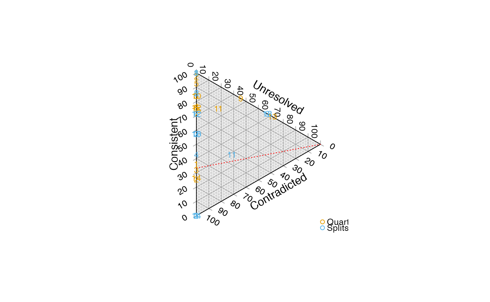

Generate points to depict tree difference (in terms of resolution and accuracy) on a ternary plot.
QuartetPoints(trees, cf = trees[[1]])
SplitPoints(trees, cf = trees[[1]])
BipartitionPoints(trees, cf = trees[[1]])A data frame listing the ternary coordinates of trees, based on the amount of information that they have in common with the comparison tree (which defaults to the first member of the list, if unspecified).
The ternary plot will depict the number of quartets or splits that are:
resolved in the reference tree (cf), but neither present nor contradicted
in each comparison tree (trees);
resolved differently in the reference and the comparison tree;
resolved in the same manner in the reference and comparison trees.
If the reference tree (cf) is taken to represent the best possible knowledge
of the "true" topology, then polytomies in the reference tree represent
uncertainty. If a tree in trees resolves relationships within this
polytomy, it is not possible to establish (based only on the reference tree)
whether this resolution is correct or erroneous. As such, extra resolution
in trees that is neither corroborated nor contradicted by cf is ignored.
Smith MR (2019). “Bayesian and parsimony approaches reconstruct informative trees from simulated morphological datasets.” Biology Letters, 15(2), 20180632. doi:10.1098/rsbl.2018.0632 .
library("Ternary")
data("sq_trees")
TernaryPlot(alab = "Unresolved", blab = "Contradicted", clab = "Consistent",
point = "right")
TernaryLines(list(c(0, 2/3, 1/3), c(1, 0, 0)), col = "red", lty = "dotted")
TernaryText(QuartetPoints(sq_trees, cf = sq_trees$collapse_one), 1:15,
col = Ternary::cbPalette8[2], cex = 0.8)
TernaryText(SplitPoints(sq_trees, cf = sq_trees$collapse_one), 1:15,
col = Ternary::cbPalette8[3], cex = 0.8)
legend("bottomright", c("Quartets", "Splits"), bty = "n", pch = 1, cex = 0.8,
col = Ternary::cbPalette8[2:3])
